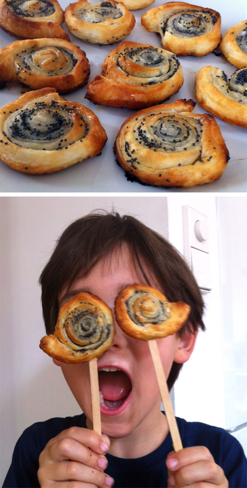
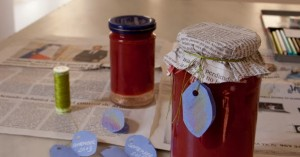

Aquí podeís ver a Nora preparando el pan para la escuela.

Aquí podeís ver a Nora preparando el pan para la escuela.

Con nuestra decoración de una coca típica de Alemania somos capaces de traer paisajes invernales a Valencia.
Leer más →
Hemos dado un toque de otoño a nuestra merienda. Las bellotas con caras pintadas y unas hojas del ginkgo hemos pinchado con unos palillos en nuestras…
Leer más →
Haciendo los agujeros con pajitas Noah estaba explicando que son galletas de viaje. Yo pensaba que son para colgar en el árbol pero el tiene claro…
Leer más →


Conozco unos niños que prefieren la mitad de una manzana con gusano que uno sin!
Leer más →